; occupation is
; occupation is  ; integrating gives
; integrating gives  ,
, Density of states (derivation)
States in a box
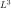
with periodic conditions: one per
per 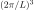
, two spins (Dirac 1926; Sommerfeld 1928). Number with energy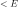
: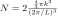
, . Differentiate per volume: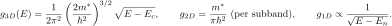
Fermi–Dirac (derivation)
Grand-canonical ensemble for a single-particle state that holds 0 or 1 fermion (Pauli):
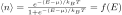
,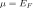
(Fermi 1926). For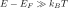
: Boltzmann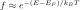
(non-degenerate semiconductor).Carrier densities
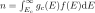
. In the Boltzmann limit the Gaussian integral gives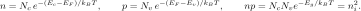
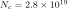
,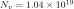
cm . The mass-action law
. The mass-action law 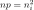
does not depend on , hence not on doping.
, hence not on doping.
Picture
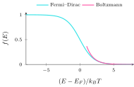
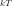
above the Fermi level and differ strongly below.Worked example
Si with
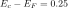
eV at 300 K: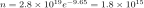
cm, 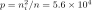
cm. Raising  to 400 K multiplies
to 400 K multiplies  by about 300 (
by about 300 (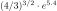
): diffusion leakage (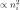
) doubles every ~5 K and generation leakage (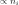
) every ~10 K.Engineering applications
Temperature dependence of leakage and of the diode voltage (−2 mV/K, used in on-chip thermometers), quantum-well and quantum-dot lasers (step-like 2D DOS gives lower threshold, see quantum wells), degenerate doping in contacts and tunnel diodes.
Pitfall
The Boltzmann formulas fail when is within
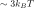
of a band edge (heavily doped regions, inversion layers); then use Fermi–Dirac integrals.